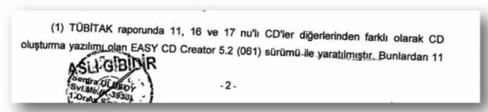

Soruşturma sırasında şüphelilerin belgelere erişimi ve tutukluluk halleri ile ilgili kararlar veren özel yetkili mahkemeleri bir kenara bırakırsak, Balyoz ile ilgili adli süreçte üç ana aktörden bahsedebiliriz: savcılar, emniyet, ve TÜBİTAK. Bunları tek tek ele alacağız.
1. Balyoz Soruşturmasında Görev Alan Savcılar
20 Ocak 2010’da Taraf gazetesinde Balyoz iddialarının yayımlanmaya başlamasından sonra, 21 Ocak’da Baransu iddialara konu olan belgelerin kaydedildiği 4 DVD’yi İstanbul Başsavcılığı’na teslim ediyor ve 22 Ocak’ta İstanbul Başsavcılığınca soruşturma başlatılıyor. Balyoz soruşturması için Cumhuriyet Savcısı Bilal Bayraktar, soruşturmaya yardımcı olarak da Savcılar Ali Haydar ve Mehmet Berk görevlendiriliyor. Soruşturmanın koordinator savcısı olarak da Süleyman Pehlivan atanıyor.
Bilal Bayraktar 11. Ağır Ceza Mahkemesi’nin nöbetçi hakiminden, belgelere erişim kısıtının konulmasını talep ediyor (Dava klasorü no.2, Dizin no. 14). Talebin nöbetçi hakim tarafından onaylanmasıyla birlikte, Taraf gazetesinde seçilmiş bölümleri sayfalar halinde günlerce yayımlanan belgeler dahil olmak üzere iddialara dayanak oluşturan tüm belgelere şüphelilerin erişimi engelleniyor.
Soruşturma kapsamında şüphelilerin evlerinde arama yapılıyor, şüpheliler gözaltına alınıyor ve Savcı Bilal Bayraktar’ın tutuklama talebiyle Mahkemeye sevkediliyor. Mahkemenin tutuklama kararı vermesiyle onlarca şüpheli Silivri ve Hasdal cezaevlerine gönderiliyor.
Bu süreç içinde belgelere erişim kısıtı olduğu için şüphelilerin vekilleri ancak gazete kupürlerinden sürebildikleri izlerle, belgelerin sahte olduğunu öne sürerek tutuklama kararına itiraz ediyorlar. 1 Nisan 2010’da tutuklu bulunan şüphelilerin tutukluluğa itirazı kabul ediliyor. 4 Nisan’da savcıların bu karara itirazı ile şüpheliler tekrar tutuklanıyor. Savcı Bilal Bayraktar aynı gün, çoğu muvazzaf 95 kişi hakkında (3. Dalga olarak adlandırılan) arama ve gözaltı operasyonu başlatıyor. Bu operasyonu durdurma kararı alan İstanbul Cumhuriyet Başsavcısı Aykut Cengiz Engin, Bilal Bayraktar ve Mehmet Berk’i bu soruşturmadan alıyor.
5 Nisan 2010’da Bayraktar ve Berk’in yerine Savcılar Mehmet Ergül ve Mehmet Murat Yönder görevlendiriliyor. 7 Temmuz 2010 tarihini taşıyan Balyoz iddianamesinin altında Mehmet Ergül, Süleyman Pehlivan, Ali Haydar ve Mehmet Murat Yönder’in imzası var.
Savcılar Balyoz CD’sinin Sahte Olduğunu Bilmiyor mu?
Balyoz klasörü elimize geçtikten sonra, Balyoz CD’sindeki belgeleri karıştırdıkça ortaya çıkan tarih tutarsızlıkları karşısında verdiğimiz ilk tepki "biz binlerce kilometre mesafeden ve sadece Google arama motoru sayesinde bunları tespit edebiliyorsak, savcılar bunları nasıl ortaya koyamadı?" oldu.
Önce, bulduğumuz ilk bir kaç tutarsızlıktan sonra, bu belgelerin savcıların "gözünden kaçmış" olabileceğini düşündük. İnsanların aylarca hapishanede tutulduğu bir soruşturmada bu bir mazeret olamazdı, dolayısıyla savcıların bu soruşturmada görevlerini ihmal ettiğini düşündük. Ancak tarih tutarsızlığı içeren ve Balyoz belgelerinin sahte olduğunu bariz bir şekilde gösteren belge sayısı arttıkça durumun sadece savcıların görevlerini ihmal etmesinden ibaret olmadığı kuşkusu doğdu.
Maalesef, Balyoz dava klasörlerini incelerken gördüğümüz yazışmalar ve iddianamenin kimi bölümleri bu kuşkunun yersiz olmadığını gösteriyor.
Toplam 44.000 sayfayı bulan ek klasörlerdeki yazışmalardan gördüğümüz üzere, savcılar 11 no.lu CD’nin içinden çıkan şirket, dernek, kurum ve kişilere dair tüm listeleri ilgili kuruluşlara gönderip adı geçen isimlerin 2002-2003’de varolup olmadığının tespitini istemişler. Balyoz belgelerinde tutarsızlık olup olmadığını ortaya çıkarmak için çaba sarfetmişler. Dolayısıyla bu konuda görevlerini ihmal ettiklerini söyleyemeyiz.
Örneğin, savcıların Balyozcuların kontrol altına alacağı ilaç depoları ve hastaneler listelerini Mart 2010’da İstanbul İl Sağlık Müdürlüğü’ne gönderdiğini, ve listelerdeki şirket ve hastanelerin 2002-2003 senesinde faaliyette bulunup bulunmadıklarına dair bilgi istediğini görüyoruz (Ek klasör no.7, dizin no.63). Benzer bilgiler İstanbul Valiliği İl Dernekler Müdürlüğü’nden, listelerdeki dernekler için de istenmiş (Dava klasorü no. 7, dizin no. 69). Bunlar gibi yazılar, İl Müftülüklerine (kuran kursları için), İl Eğitim Müdürlüklerine (okul ve dersaneler için), Emniyet’e (Emniyet personeli için), FİNTEK, ASELSAN, HAVELSAN, TAİ’ye (çalışanlar için) ve daha nice kuruma gitmiş.
O zaman bizim bulduğumuz tarih tutarsızlıkları ortaya çıkmış olmalı, öyle değil mi? Örneğin İl Sağlık Müdürlüğü 2003 senesinde Sultangazi’de "Medical Park Sultangazi" isminde bir hastane bulunmadığını belirtmiş olmalı. Benzer şekilde, İl Dernekler Müdürlüğü 2003 senesinde "Liberal Avrupa Derneği" adından bir derneğin olmadığını cevabı yazısında bildirmiş olmalı. Peki, davanın ek klasörlerinde olması gereken bu cevabi yazılar nerede? Savcılar tarafından adli emanete kaldırılmış!
Bu cevapların neden adli emanete kaldırıldığı konusunda savcılar iddianamede (o da sadece kişiler ile ilgili listeler için) şöyle bir gerekçe sunuyorlar (İddianame, sayfa 50):
"Bu yazılarımıza askeri makamlardan, idari makamlardan bakanlıklardan, üniversitelerden ve çeşitli kuruluşlardan gelen yazı cevapları DEĞERLENDİRMEYLE İLGİLİ GELEN yazı cevapları başlıklı toplam 6 klasöre konmuştur. Yukarıdaki anlatımda bahsedildiği gibi burada da değerlendirmeye konu kişilerin görev yerleri hatta nüfus kayıt örnekleri, TC kimlik numaraları gibi bir kısım kişisel verileri de içerdiğinden bu klasörlerde adli emanete alınmış ve kişisel değerlendirmeyle ilgili klasör (DG 1-6 ) numarası verilerek bu klasörlerde adli emanete alınmıştır."
Burada akla iki soru geliyor:
1) Peki bu gelen yazıların kişi bilgileri verilmeksizin bir özetinin verilmesi gerekmez miydi? Savcılar Balyoz belgelerinde geçen kişi isimlerini sansürleyerek dosyaya koyabildiklerine göre, gelen yanıtları da aynı şekilde (isimleri sansürleyerek) pekala dosyaya koyabilirlerdi. Ya da en azından dava dosyasında şu şekilde bir bilgiye yer verebilirlerdi: "X belgesinde Y kurumunda çalışıyor olarak görünen şu kadar kişiden bu kadar kişi, belgenin yazıldığı tarihte Y kurumunda değildir. Bunlardan şu kadarı daha ileriki tarihlerde bu kurumda çalışmaya başlamıştır."
2) Ayrıca, kişi ismi içermeyen listeler (hastaneler, ilaç şirketleri, dernekler, kurs ve dersaneler) dava klasörlerinde olduğu gibi geçiyor. Bu kurumların gizlenmesi gereken TC Kimlik numaraları da yok. Gelen cevaplar neden adli emanette saklanıyor?
Bu noktada tekrar hatırlatmakta fayda var; Balyoz davası tüm Balyoz belgelerini içeren 11 no.lu CD’nin 5 Mart 2003’de Çetin Doğan için özel olarak hazırlandığı iddiası üzerine inşa edildi. Bu CD’den çıkan listelerde, bunun doğru olmadığına işaret eden tarih tutarsızlıkları bu dava için birinci dereceden önemli.
Düşünün ki, bu tutarsızlıkları sanık yakınları ve vekilleri araştırıp gündeme getirmese, sanıkların lehine olan ve birilerinin sahte belge üretme suçu işlediğine dair bütün bu bilgiler adli emanette saklı kalacak. Bir hukuk devletinde savcılar, "tarafsız" çalışan emniyetin yardımı ile kanıtların (özellikle kanıtlar buradaki gibi sadece dijital kanıtlarsa) güvenilirliğini saptamak için inceleme yaparlar. Sahteciliği gösteren olgular ortaya çıkarsa, bunları örtbas etmezler. Zira, her şüphelinin ya da sanığın, bunları ortaya koyacak kızı, oğlu, damadı, gelini, vs. olmayabilir. Olması da gerekmemelidir.
Üstelik, daha da kötüsü, sadece iddianameyi okuyanların listelerdeki kurum ve kuruluşlarla ilgili tarih tutarsızlıklarının olup olmadığının araştırılması sonucu hiç bir tutarsızlığın ortaya çıkmadığı izlenimini edinmesi gayet mümkün. Çünkü, savcılar iddianamede yeri geldiğinde tutarsızlıkların olmadığına dair "muğlak" ifadelerde bulunuyorlar. Örneğin, 11 no.lu CD’den çıkan, kapatılacak derneklerle ilgili olarak iddianamede aynen şunlar yazıyor (sayfa 299):
"11 no.lu CD/Jandarma/İSTANBUL BÖLGE/ DERNEKLER isimli klasörler içinde yer alan ‘’KAPATILACAK VE EL KONULACAK DERNEKLER’’ isimli ‘’GİZLİ’’ ibareli, imza kısmında ‘’İsth.Ş.Md. J.Kd.Alb.Kubilay AKTAŞ’’ ismi yer alan belgede, ‘’İSTANBUL İLİNDE KAPATILACAK DERNEKLER’’ başlığı altında, 60 adet derneğe ait isim bilgisinin yer aldığı, ayrıca bu derneklerin "Bölücü, Ermeni azınlık, irticai-bölücü, misyonerlik," şeklinde fişlendikleri görülmektedir. Kubilay AKTAŞ isimli kullanıcı tarafından Balyoz Harekat Planının son kaydetme tarihinden sonra 27.12.2002 tarihinde oluşturulan belgenin, Süha TANYERİ isimli kullanıcı tarafından seminerden önce 24.02.2003 tarihinde son kez kaydedildiği görülmektedir. İlgili kurum ile yapılan yazışmalardaki bilgiler ile listede yer alan yerlerin örtüştüğü anlaşılmıştır."
İlgili kurum, ek klasörden gördüğümüz üzere İstanbul Valiliğine bağlı Dernekler Müdürlüğü. Müdürlüğün, örneğin, 2002-2003’de Liberal Avrupa Derneği isminde bir dernek olmadığını bilmemesine imkan yok; kanun gereği dernekler isim ve tüzük değişikliklerini bildirmek zorundalar. Zira, bu isimde bir derneğin o tarihlerde olmadığını biz Dernekler Müdürlüğünden aldığımız yazı ile belgeledik.
Bu durumda (...) listede yer alan yerlerin örtüştüğü" gibi bir ifadeyi anlamak mümkün değil. İsimler örtüşmediği için mi yerlerin örtüştüğü belirtiliyor?[47] Üstelik, bu listelerde adres bilgisi, yani "yer" belirtilmiyor ki.
Savcılığın çeşitli kurumlardan bilgi talep eden yazılarını ek klasörlerde gördükten sonra, Doğan’ın vekilleri 10. Ağır Ceza Mahkemesi’nden, mahkemenin uygun göreceği şekilde bu cevabı yazıları incelemek için talepte bulundu. Mahkeme heyeti ise savcıların bu konudaki mütalaasına uyumlu olarak bu talebi oy birliği ile reddetti.[48] Sebep yine aynı; cevabi yazılarda kişilere ait özel bilgiler var! Oysa daha önce belirttiğimiz gibi, hastanelerin ve derneklerin saklanması gereken TC kimlik numaraları yok, dolayısıyla bu gerekçe hiç tatmin edici değil.
Kısacası, savcıların tarih tutarsızlıklarını dolayısıyla belgelerdeki sahteciliği tespit etmek için ellerinde yeterli bilgi olmadığını söylemek mümkün değil.
Bunu destekleyen bir başka olgu da, Askeri Bilirkişi Heyetinin 28 Haziran 2010 tarihli raporu ile Genelkurmay Adli Müşavirliğinin savcılığa belgelerdeki tutarsızlıklarla ilgili 17 Mayıs 2010’da verdiği bilgilerin hiç dikkate alınmamasıyla ortaya çıkıyor.
Örneğin, bir önceki bölümde belirttiğimiz CC MAR NAPLES ile ilgili tarih tutarsızlığını, biz kendi araştırmamızla değil, davanın ek klasörünü okurken orada yer alan bir yazışma sayesinde öğrendik. 11 no.lu CD’den çıkan bir Word dokümanında (Öncelikli ve Özellikli Görevlendirme Listesi) bir subayın bağlı olduğu birlik olarak belirtilen CC MAR NAPLES’in 2002-2003 tarihlerinde mevcut olmadığını, bu askeri birliğin 1 Temmuz 2004’de kurularak HQ NAVSOUTH’un yerini aldığını, Genelkurmay Adli Müşavirliği, 17 Mayıs 2010’da Savcılığa gönderdiği yazı ile bildiriyor (Ek klasör no. 14, dizin no. 197). Adli Müşavirliğin yazısı bunun dışındaki başka tarih çelişkilerini de belirtiyor. Ancak bu olgular hiçbir şekilde savcılık tarafından dikkate alınmıyor. Toplam 44.000 sayfayı bulan ek klasörleri okumak için yeterince vaktiniz yoksa, bu ve benzeri önemli bilgiler yüzlerce yazışma, tahliye talepleri, sağlık raporları, vs. içinde kayboluyor.
Belki daha da dikkat çekici bir konu, savcıların iddianameyi hazırlarken bir tümgeneral, iki kurmay albay, bir kurmay binbaşı ve bir mühendis üsteğmenden oluşan Askeri Bilirkişi Heyetinin son derece kapsamlı olan raporunu hiç dikkate almaması. Bu rapor 28 Haziran 2010’da hazırlanıyor ve 1 Temmuz 2010 tarihinde savcılık tarafından teslim alınıyor (Ek klasör no. 30, dizin no. 461).
Bu detaylı raporun bulguları birinci derecede önemli çünkü savcılarının iddialarıyla tamamen çelişiyor. Balyoz Planı ve diğer Eylem planlarının 1. Ordu’da hazırlanmış olduğu, 1. Ordu Plan Seminerinin bir darbe provası olduğu, içeriğinin Kara Kuvvetleri Komutanlığı ve Genelkurmaydan habersiz olarak geliştirildiği ya da değiştirildiği savları tek tek değerlendirilip, reddediliyor. 1. Ordu’da Plan Semineri ile ilgili çalışmalar detaylı bir şekilde belgeleniyor ve bunların askeri teamüllere uygun bir şekilde cereyan ettiği vurgulanıyor. Ek olarak, Balyoz ve Eylem planlarının sahte olduğuna işaret eden tarih tutarsızlıklarının ve askeri yazım kural ve usulleriyle çelişen ifadelerin dökümü yapılıyor. Yaklaşık 3.000 sayfayı bulan (ve kamuoyunun nedense hiç ilgi göstermediği!)[49] bir rapordan bahsediyoruz. Rapor 12 klasör halinde davanın ek klasörleri arasında yerini buluyor (dava klasörleri no. 30-41), ancak savcılar bu raporda sunulan somut olguları ne dikkate alıyorlar ne de sunulan bulguları çürütecek yeni belge ya da kanıt sunuyorlar.
Anlaşılan, burada iddianamenin hazırlanması ve kabulü ile ilgili zamanlama faktörü önem taşıyor. 1 Temmuz’da 3.000 sayfalık raporu teslim alan savcılar muhtemelen o tarihte zaten hazır olan iddianamenin altına 3 Temmuz 2010’da imzalarını atıyorlar. Raporun ele geçmesinden iddianamenin tamamlanmasına kadarki iki günlük süre zarfında savcıların bu rapordaki bilgi ve bulguları değerlendirmelerine olanak yok, buna yeltenmiyorlar da. Formalite gereği iddianamenin bir iki yerinde kısaca bu rapordan bahsediliyor, ancak raporun Balyoz belgelerinin sahte olduğuna dair ortaya koyduğu ciddi ve somut kanıtlar, raporla birlikte davanın ek klasörleri arasında kaybolup gidiyor.
Savcılar Balyoz Sanıklarını Nasıl "Seçti"?
Savcıların iddianameyi hazırlarken kimlerin sanık olacağına nasıl karar verdikleri, sadece iddianame ve eklerinde sunulan bilgiler ile anlaşılabilecek bir konu değil.
11 no.lu CD’nin içinden çıkan Word belgelerinde görevli olarak listelenmiş binlerce insan var. Bu belgelere göre sadece Balyoz Güvenlik Harekat Planı çerçevesinde 1.400 kişi görevlendirilmiş. Bunun yanı sıra, suç unsuru içeren dosyaların üstverilerine baktığınız zaman bu belgeleri kaydetmiş gibi görünen onlarca insan var. Savcılar, 1’inci Ordu’daki plan seminerinde Balyoz darbe planının müzakere edildiğini iddia ediyorlar ve bu seminere katılan 162 kişi var.
Bu iddialar karşısında akla gelecek ilk soru, sanık listesinin nasıl oluşturulduğu.
Daha önce bahsettiğimiz gibi, Balyoz iddianamesinde 196 tane sanık var. Seminere katılan kişilerden sadece 48’i davada sanık; ve katılımcıların önemli bir kısmının (yaklaşık 90 kişinin) ifadesine bile başvurulmamış. Peki kimler "Balyoz" sanığı?
Şimdi isimlerini vermeden iki şüphelinin durumunu karşılaştıralım. Şüpheli X ve Şüpheli Y.
Şüpheliler hakkındaki mevcut deliller:
Şüpheli X, 1’inci Ordu’daki plan seminerine katılıyor. Şüpheli X’in adı Balyoz belgelerinin olduğu CD’nin içindeki bir belgede görevlendirilecek kişiler listesinde geçiyor.
Şüpheli Y, 1’inci Ordu’daki plan seminerine katılmıyor. Şüpheli Y’nin adı Balyoz belgelerinin olduğu CD’nin içindeki iki belgede görevlendirilecek kişiler listesinde geçiyor.
Her iki şüpheli de sorgusunda üzerine atılı suçu işlemediğini, söz konusu planları (Balyoz, Oraj, Suga, vs.) ilk defa basından duyduğunu ifade ediyor.
Şüpheliler hakkında savcıların iddianamede yer alan değerlendirmesine gelince:
"Şüpheli X’in Balyoz Güvenlik Harekat Planının müzakere edildiği 05-07 Mart 2003 tarihinde 1. Ordu Komutanlığı Karargahında yapılan plan seminerine katıldığı, dosyada mevcut 17 no.lu CD içerisinde yer alan (…) başlıklı belgede (…) şeklinde adının geçtiği anlaşılmakta ise de; şüphelinin savunması ve hakkındaki evrak ve belge kapsamlarına göre atılı suçu işlediğine dair hakkında kamu davası açılmasını gerektirecek keyfiyette delil bulunmadığı kanaatine varılmıştır."
"Şüpheli Y her ne kadar savunmasında atılı suçla ilgisinin olmadığını beyan etmekte ise de; yukarıda yazılı delillerin [delil olarak Y’nin adının hangi Word belgesinde geçtiği aktarılıyor] kül olarak değerlendirilmesi neticesinde Balyoz Güvenlik Harekat Planıyla bağlantılı olarak hazırlanan ve içerik ve niteliği iddianamenin genel değerlendirme bölümünde detaylı olarak izah olunan Suga Harekat Planını bağlı olarak bu planın icrası için (…) olarak görevlendirildiği, öncelikli ve özellikli görevlendirme listesinde yer aldığı, bu şekilde Türkiye Cumhuriyeti Hükümetini Cebren Iskat veya Vazife Görmekten Cebren Men Etmeye Teşebbüs suçunu işlediği kanaatine varılmıştır."
Savcılar, X için bir Word belgesinde adının geçmesinin kanıt oluşturmayacağını değerlendirirken (ki doğal olanı bu), Y’nin adı iki tane Word belgesinde geçtiği için "Türkiye Cumhuriyeti Hükümetini Cebren Iskat veya Vazife Görmekten Cebren Men Etmeye Teşebbüs suçunu işlediği" kanaatine varıyorlar. Y, X’den farklı olarak 1’inci Ordu seminerine katılmadığı halde.
Bu iki şüpheli arasında niye böyle bir ayırımın yapıldığı, birincisi için aleyhte delil teşkil etmeyen verilerin diğeri için neden delil teşkil ettiği konusunda iddianame hiçbir şey söylemiyor. Eğer Y’nin yer aldığı iki Word belgesinde adı geçen herkes davada sanık mı diye merak ediyorsanız; hayır.
Ve bu, sadece bir örnek. Buna benzer çok örnek var.
Hukukun en önemli kurallarından biri hukuk önünde eşittik, yani aynı konumda olan kişilerin aynı muameleyi görmesi gerektiğidir. Burada sadece bir örnekle gösterdiğimiz durum, savcıların sanıkları belirlerken mevcut delilleri değil, bilmediğimiz başka bir kriteri esas aldığını gösteriyor.
Savcılara Göre "Balyoz Planı Sahte Olamaz Çünkü …"
Balyoz iddianamesinin belirgin özelliklerinden bir tanesi, sanıklar lehine hiçbir olgu (burada sıkça örneklerini verdiğimiz zamanlama çelişkileri ve tutarsızlıklar) konu edilmez ya da ciddi bir değerlendirmeye tabi tutulmazken, çeşitli şekilde yorumlanabilecek verilerin mantık sınırlarını zorlayarak sanıklar aleyhine kullanılmaya çalışılması.
Bir örnekle başlayalım. İddianamenin sonuç bölümünde (s. 957) savcıların yürüttüğü mantık o kadar garip ki hayretler içinde kalmamak mümkün değil:
"Yürütülen soruşturmaya konu BALYOZ HAREKAT EYLEM PLANI ile SUGA HAREKAT PLANI’nın eklerinin önemli ölçüde mevcut olduğu, ORAJ HAVA HAREKAT PLANI’nın eklerinin çoğunun bulunmadığı anlaşılmıştır.
Soruşturmaya konu harekat planları ve belgelerin sahte olarak sonradan düzenlenmiş olduğu iddiasının kabulü halinde, Oraj Hava Harekat Planının da tüm ekleri ile birlikte sahte olarak düzenlenmesi, diğer dokümanlarla birlikte CD’lere kopyalanması mümkün olabilirdi. Bu planın eklerinin bulunmaması, ORAJ HAVA HAREKAT PLANI’nı hazırlayanların çalışmalarını zamanında tamamlayarak teslim edemediklerini veya teslim etmelerine rağmen soruşturma konusu dokümanları gazete muhabirine ulaştıran kişi ya da kişilerin bu belgelere ulaşamadıklarını, ele geçen dokümanların sahte olarak düzenlendiği iddiasının asılsız olduğunu göstermektedir.
Ele geçen dokümanların sahte olarak düzenlendiği iddiasının asılsız olduğunu gösteren neymiş? Oraj planının eklerinin çoğunun bulunmaması! Neden? Eğer Balyoz ve ekleri sahte olarak sonradan düzenlenmiş olsalar, Oraj Hava Harekat Planı da tüm ekleri ile birlikte sahte olarak düzenlenir, diğer dokümanlarla birlikte CD’lere kopyalanabilirmiş.
Nedense savcıların aklına başka olasılıklar gelmiyor. Mesela, üretilen harekat planını komple bir askeri kılıfa uydurmak için gereken verilerin hepsi sahtekarların elinde bulunmamış ve bu yüzden böyle bir plan için gereken eklerin tümünün içi doldurulamamış olması gibi. Ya da siyasi sebeplerle işin aceleye getirilmiş olması gibi.
Peki savcılara göre niçin bu ekler yok? Çünkü ya (1) hazırlayanlar çalışmalarını zamanında tamamlayarak teslim edememişler, ya da (2) bu dokümanları gazete muhabirine ulaştıran kişi bu belgelere ulaşamamış. İki argüman da savcıların iddianamede geliştirdikleri diğer tezlerle çelişiyor. Bir ordu komutanına özel olarak iletilen bir plan içersinde atıf yapılıp da henüz hazırlanmadığı için verilemeyen ekler olabilir mi? Böylesi yarım yamalak bir plan komutana sunulur mu? Ya da çalışmalar henüz tamamlanamamışsa nasıl oluyor da darbenin provası plan seminerinde yapılabiliyor?
Dikkati çeken nokta, bu denli zayıf bir argüman üzerinden savcıların kesin hükme varabilmesi ("asılsız olduğunu göstermektedir").
Savcıların iddianamede izledikleri garip mantığa yine aynı sayfadan ikinci bir örnek verelim. Savcılar ellerindeki CD’lerde bulunan kullanıcı isimlerinden hareketle belgelerin sahte olamayacağını yazıyorlar. Mantıklarını izleyelim:
"Belgeleri oluşturan, kullanan ve son kaydeden kullanıcı isimlerinin bir çoğunun "NAZLI", "m.Uctepe", "79964008″, "HRKBSK", "79561079″, "serkani", "Süha TANYERİ", "fserbest" olduğu görülmüştür. Alınan ifadeler ve yapılan incelemeler neticesinde … "fserbest" kullanıcı isminin Genelkurmay MEBS Başkanlığında görevli Fikret SERBEST isimli bir subaya ait olduğu, powerpoint kullanımında Genelkurmay Başkanlığı ve TSK genelinde bir standart şablon oluşturulması emrine istinaden bu subayın hazırladığı şablonun tüm birliklere dağıtıldığı, hazırlanan dokümanların bu şablon üzerinde değişiklik yapılması suretiyle hazırlandığı,bu sebeple birçok power point belgesinde "fserbest" isimli kullanıcının belgeyi yazan kişi olarak görüldüğü, tüm belgelerin TSK’ya ait bilgisayarlarda hazırlandığı anlaşılmıştır. Pek çok belgede kullanıcı ismi olarak "fserbest" isminin yer alması, belgelerin kötü niyetli kişilerce sahte olarak üretildiği iddiasının dayanaksız olduğunu göstermektedir.
Bunu okuduktan sonra bolca kafamızı kaşıdık. Burada sergilenen mantıksızlık düğümünü çözmeye nereden başlayacağımızı kestirmekte hayli zorlandık.
Önce belirtelim ki "tüm belgelerin TSK’ya ait bilgisayarlarda hazırlandığı"na dair hiç bir kanıt mevcut değil. Ne bilirkişi raporlarında ne başka yerde. Belgelerde görünen kullanıcı isimlerinin TSK mensuplarına ait olması belgelerin ve CD’lerin hangi bilgisayarlardan çıktığına delil teşkil etmez.
Dahası:
1. "Kötü niyetli" kişiler istedikleri belgeyi (orijinal CD’lerden esinlenerek) "fserbest" kullanıcı adı ile hazırlayabilirler.
2. "fserbest" kullanıcı ismiyle yazılmış kimi gerçek belgeler sahte darbe planları ile birlikte aynı CD’nin içine (CD’lere gerçeklik görüntüsü kazandırmak için) kaydedilmiş olabilir.
Her şekilde, belgelerin bir çoğunun "fserbest" kullanıcı ismi taşıması ve bunun bir şablon uygulanmasından kaynaklanması sahtecilik iddiasının "dayanaksız" olduğunu göstermekten çok uzak.
Savcıların suç unsuru içeren CD’deki tarih tutarsızlıklarına işaret edebilecek yazışmaları adli emanete kaldırmaları, Genelkurmay Adli Müşavirliğinin ve Askeri Bilirkişi Heyeti’nin bu CD’nin sahte olduğuna dair sunduğu olguları tamamen gözardı etmeleri, ve üstüne üstlük, yukarıda örneğini verdiğimiz gibi bu CD’nin sahte olmadığını öne sürmek için akıl almaz argümanlar kullanmaları adalet mekanizmasının nasıl işlediği konusunda herkesi kaygılandırmalı.
İddianamenin ek klasörlerini incelemediğiniz ve kendi araştırmanızı yapmadığınız sürece, bunları farketmenize imkan yok; zira tarih çelişkisi içeren listeler, Askeri Bilirkişi Heyet raporu, Genelkurmay Adli Müşavirliği ile yapılan yazışmalar, sadece ek klasörlerde yer alıyor ve klasörlerdeki toplam 44.000 küsur sayfa arasında kaybolup gidiyor.
Sivil Memurelerin İfadeleri
Ek klasörlerin dikkatli bir okuması başka ilginç konuları da ortaya çıkarıyor. Önemli bir husus, 1. Ordu’dan iki sivil memurenin ifadelerinin iddianamede eksik ve yanıltıcı olarak aktarılmış olması.
Savcıların iddiasına göre 1. Ordu Komutanlığı Harekat Başkanlığı’nda görev yapan iki sivil memure Balyoz CD’lerini Çetin Doğan için hazırladıklarını ifade ediyorlar. Oysa sivil memureler Melek Üçtepe ve Sevilay Erkanı-Bulut’un dava dosyasının ek klasörlerinde yer alan sorgu tutanaklarında böyle bir ifade yok.[50]
Melek Üçtepe’ye 19 adet CD tek tek gösteriliyor. Hatırlatalım; sahte CD’ler 11, 16 ve 17 no.lu CD’ler ve tüm "Balyoz" belgeleri 11 no.lu CD’nin içinde yer alıyor. (17 no.lu CD’de ise 11 no.lu CD’deki belgelerden bir kısmı kayıtlı). Üçtepe 17 no.lu CD için "Bu CD’yi hatırlamadım. Üzerindeki yazı bana ait değildirdiyor. Yine 11 no.lu CD için "Ben bu CD’yi hatırlamadım. Bu CD bizim arşive ait değildir" diyor.
Melek Üçtepe 7,8, ve 16 no.lu CD’leri de hatırlamadığını, ancak geri kalan tüm CD’leri net olarak hatırladığını ifade ediyor, herhangi bir şüphesi bulunmadığını da ekliyor.
Dolayısıyla Melek Üçtepe’nin ifadesine dayanarak "Balyoz" CD’lerin 1. Ordu’dan çıktığını iddia etmek mümkün değil. Daha da ötesi, Üçtepe’nin kendisine gösterilen 19 adet CD arasından büyük çoğunluğunu net olarak hatırlamasına rağmen şaibeli olan 11, 16 ve 17 no.lu CD’leri kesinlikle hatırlamaması yeterince aydınlatıcı.
Diğer sivil memure Sevilay Erkanı-Bulut ise, ilginç bir şekilde aynı gün içinde iki kere sorgulanıyor. İlk sorgusunu yapan Cumhuriyet Savcısı Ali Haydar’dan sonra, ek sorulara ihtiyaç duyulduğu gerekçesiyle Cumhuriyet Savcısı Bilal Bayraktar tarafından ikinci kere ifadesi alınıyor.
Sevilay Erkanı-Bulut ilk sorgusunda Balyoz planını hiç duymadığını açıkça ifade ediyor; Ben Balyoz Güvenlik Harekat Planını ilk defa basından duydum. Çalıştığım dönemde böyle bir Harekat Planı duymadım" diyor.
Kendisine bu sorgusu sırasında 15 no.lu CD gösteriliyor ve Bulut da bu CD’deki belgelerin nereden geldiğini açıklıyor.
İkinci sorgusunda Sevilay Erkanı-Bulut’a öncelikle 11 No.lu ve 17 no.lu CD’lerde yeralan Balyoz Harekat Planı ve ekleri ile ilgili TÜBİTAK raporu gösteriliyor. Bilindiği üzere bu rapor, savcılarca "Balyoz" belgelerinin gerçek olduğuna dayanak olarak gösteriliyor (oysa ki değil).
Ardından teşhis etmesi için kendisine 19 adet CD’nin asılları değil, Baransu’ya teslim edilen DVD’lerden birinin içinden çıkan fotoğrafları gösteriliyor (oysa aynı gün yapılan bir önceki sorgusunda 15 no.lu CD’nin aslı gösterilmişti).Sevilay Erkanı-Bulut fotoğraflarına baktığı CD’lerden, diğer kimi CD’lerin yanısıra, üzerinde "Or.K.na" ve "K.Özel" yazan CD’leri hatırladığını, hatta bu CD’leri Komutana verilmek üzere özel olarak hazırladıklarını ifade ediyor.(Melek Üçtepe’nin sorgu tutanağında savcıların sordukları sorulardan 11 no.lu CD’nin üzerinde "Or K.na", 17 no.lu CD’de ise "K.Özel" yazdığını anlıyoruz.)
Burada şüphe uyandıran üç konu var:
İlk ifadesinde Balyoz planını ilk defa basından duyduğunu net olarak ifade eden Sevilay Erkanı-Bulut’un, iddianamede belirtilmeyen bir sebeple ikinci bir kere sorgulanması,
İkinci sorgusunda Bulut’a öncelikle TÜBİTAK raporunun gösterilmesi,
İlk sorgusunda teşhis etmesi için Bulut’a 15 no.lu CD’nin aslı gösterilirken, ikinci sorgusunda diğer CD’lerin asıllarının gösterilmemesi, bunun yerine CD’lerin bir DVD içinden çıkan fotoğraflarının gösterilmesi.
Eğer ikinci sorgusunda tanıdığını ifade ettiği CD’ler 11 ve 17 no.lu CD’ler ise (sorgu tutanağında bu CD’ler numaraları ile belirtilmiyor), o zaman Bulut’un ikinci ifadesi, Balyoz planını ilk defa basından duyduğunu belirttiği ilk ifadesiyle çelişiyor. Dahası, bu ifade aynı zamanda Melek Üçtepe’nin bu CD için "bizim arşive ait değildir" ifadesi ile de çelişiyor.
Ancak bir tek iddianameyi okuyan birinin bu çelişkilerden haberi olması mümkün değil. Keza iki memurenin de Balyoz planını tanımadıklarını, bu planı kendilerinin hazırlamadıklarını ifade etmiş olmalarını bilemeyeceği gibi.
Savcı Bayraktar İlk TÜBİTAK Raporu Bilirkişisini Nasıl Atadı?
Ek klasörlerden bir diğer ilginç örnek, Savcı Bilal Bayraktar’ın ilk TÜBİTAK raporunu hazırlayan bilirkişiyi nasıl atadığı. Aşağıda bu olay ile ilgili tarih dizinini veriyoruz.
4 Şubat 2010: Savcı Bilal Bayraktar TÜBİTAK’ın Gebze-Kocaeli’nde bulunan UEKAE Müdürlüğü’ne bir yazı yazarak, bilirkişi olarak Hayrettin Bahşi’nin görevlendirilmesini talep ediyor. 4 Şubat 2010 tarihli dilekçede Bayraktar aynen şöyle yazıyor (Ek klasör no. 2, dizin no. 69):
"Cumhuriyet Başsavcılığımızca yürütülmekte olan 2010/185 sayılı soruşturma kapsamında, elde edilen 19 adet CD ve 10 kaset üzerinde çok yönlü inceleme yapılabilmesi için bu konularda uzman bilirkişi hasıl olduğundan, kurumunuzda görev yaptığı anlaşılan uzman bilirkişi Hayrettin BAHŞİ’nin görevlendirilerek en kısa zamanda Cumhuriyet Başsavcılığımıza başvurusunun sağlanması hususu rica olunur."
İlginç olan ilk nokta şu: Bayraktar, UEKAE Müdürlüğü’nden bir bilirkişinin görevlendirilmesini (ya da içinden seçmek üzere bir bilirkişi listesinin gönderilmesini) değil, özellikle Hayrettin Bahşi’nin görevlendirilmesini talep ediyor.
9 Şubat 2010: TÜBİTAK-UEKAE Müdürü Önder Yetiş, bu yazıya 09.02.2010 tarihli bir yazı ile yanıt vererek Hayrettin Bahşi’nin bilirkişi olarak görevlendirildiğini bildiriyor. (Ek klasör no.2, dizin no.70):
"İlgi ile talep edildiği üzere 2010/185 sayılı soruşturma kapsamında 19 adet CD ve 10 adet kasetin çok yönlü incelemesinde bilirkişi olarak Enstitümüz personeli Başuzman Araştırmacı Sn. Hayrettin BAHŞİ görevlendirilmiştir. Bilgilerinize saygılarımla sunarım."
Ancak, dava dosyasında yer alan ve Savcı Bayraktar ile Bilirkişi Bahşi’nin imzalarını taşıyan 04.02.2010 tarihli Teslim ve Tesellüm Tutanağından görüyoruz ki (Ek klasör no.2, dizin no. 86-87), Hayrettin Bahşi CD’lerin imajlarını 4 Şubat 2010’da teslim almış bile! Bahşi, beş gün sonra çıkacak TÜBİTAK’ın görevlendirme yazısını beklemiyor ve CD’lerin imajlarını savcının TÜBİTAK’a yazı yazdığı aynı gün hemen teslim alıyor.
Hukukçular burada bir usulsüzlük olup olmadığını daha iyi değerlendirebilir, ancak olayların akışı bize tuhaf geldi.
Bir sonraki bölümde aktaracağımız üzere, Hayrettin Bahşi incelediği CD’lerin orijinal olduğunu tespit ettiği izlenimi yaratan bir rapor hazırlamış, Bayraktar ve diğerleri bu raporu baz alarak onlarca kişiyi tutuklamıştı (ayrıca Nisan ayı başında soruşturmadan alınmadan hemen önce de yüz kadar kişiyi daha tutuklamaya niyetlenmişlerdi). Bu sebeple ilk TÜBİTAK raporunu hazırlayan Bahşi hakkında Çetin Doğan tarafından hem suç duyurusunda bulunuldu, hem de tazminat davası açıldı.
3. Emniyet
Balyoz iddianamesinin hazırlanma sürecinde Emniyet’in rolü zannedildiğinden çok daha önemli. Zira, İstanbul Emniyet Müdürlüğü Terörle Mücadele Şubesinin Balyoz ile ilgili hazırladığı tespit raporu, kelimesi kelimesine, iddianamenin önemli bir kısmını oluşturuyor. Bunu sadece iddianameyi okuyarak anlamak mümkün değil, çünkü savcılar raporlardan oluşturdukları bölümler için emniyet raporlarına atıfta bulunmuyorlar.
İddianamenin bahsettiğimiz bu bölümü davadaki ana iddiaları ve kanıtlarla ilgili değerlendirmeleri içeriyor. İddianamenin 113’üncü sayfadan itibaren başlayan "(E)Ele geçen CD ve Dokümanların Değerlendirilmesi" başlıklı bölümde, kimi ana belgelerin (Balyoz Güvenlik Harekat Planı, Oraj Hava ve Suga Harekat Planları, Çarşaf ve Sakal Eylem Planları) içeriği olduğu gibi verildikten sonra, "Ele geçen Dokümanların niteliğine ilişkin tespitler" alt başlığında (sayfa 164-389) yer alan bölüm, neredeyse tamamıyla iki emniyet personelinin hazırladığı tespit tutanaklarından birebir alıntılardan oluşuyor.
Bu Türkiye’de ne kadar yaygın bir uygulamadır, bilmiyoruz, ancak bize tuhaf gelen, (her bir 196 sanık için yapılan ayrı değerlendirmeleri bir kenara koyarsak) iddianamenin içerik olarak belki de en önemli bölümünün esasen iki emniyet görevlisinin kaleminden çıkmış olması. Savcıların, iddianamenin bu bölümünü hazırlarken sadece emniyet personelinin değerlendirmelerinden faydalanması—hatta, zaman darlığından diyelim, rapordan bölümleri birebir kopyalaması—doğal karşılanabilecekse de, iddianamenin içerik olarak bu kadar önemli bir bölümünün iki emniyet personelin kaleminden çıkmış olması en azından bize tuhaf geldi.(Savcıların bu bölümleri iddianameye aktarırken yaptıkları değişiklik genelde rapordaki "değerlerlendirilmektedir" gibi yüklemleri "tespit edilmiştir" gibi yüklemlerle değiştirmek.) Üstelik, daha önce belirttiğimiz gibi, Balyoz davasının ek klasörlerinde yer alan Emniyet raporunu okuyup iddianame ile satır satır karşılaştırmadığı takdirde bunun farkedilmesi mümkün değil. Savcılar en azından bu bölümü Emniyet’in raporundan derlediklerini belirtebilirlerdi.
Emniyet raporu iddianamenin önemli bir kısmını oluşturduğu için, bu raporun vasfı ayrı bir önem taşıyor. Bu raporun "son hali" dava klasörleri 20-29 arasında yer alıyor (çoğu Mart ayında yazılmış) ve toplam üç bin küsur sayfa civarında.
Emniyet görevlileri toplam üç bin küsur sayfalık bu çalışmada Balyoz belgelerinin sahte olduğuna işaret eden önemli olgulardan tek bir tanesini bile konu etmiyorlar. Aksine, belgelerin sahteliği konusunda şüphe yaratabilecek kimi bulgulara çeşitli açıklamalar getirmeye çalışıyorlar. Bu nedenle rapor, tarafsız bilirkişilerin bir değerlendirmesinden ziyade, bir münazarada Balyoz belgelerinin gerçek olduğunu savunma rolünü üstlenmiş kişilerin çabalarına benziyor. Bir kaç örnek verelim.
Emniyet Görevlilerinin "Lojistik" Yorumu
26 Mart 2010 tarihli askeri bilirkişi raporu, Balyoz Harekat Planı’nın ekler bölümünde EK-J’nin "Lojistik" olarak belirtilmesine rağmen, belgeler arasında "Millî Mutabakat Hükümeti" isimli dokümanın EK-J olarak yeralmasına şüphe uyandıran bir olgu olarak işaret etmiş. Yani, lojistik eki olarak adlandırılan bir belgede harekatın lojistiğinin değil de, bir hükümet programının yeralmasının aykırılığına dikkat çekmişler. Benzer şekilde, son Askeri Bilirkişi Heyeti raporu da aynı konuyu (8 no.lu soruda) gündeme getirerek, bu belgelerin askeri eğitim ve öğretim almamış kişiler tarafından hazırlanmış olabileceği şüphesini belirtmiş.
Emniyet görevlileri ise hazırladıkları raporda bu konuya "açıklık" getiriyor (Ek klasör no. 20, dizin no. 230):
Milli Mutabakat Hükümetinin Balyoz Harekat planının ekinde LOJİSTİK olarak belirtilmesi hususu ile ilgili olarak;
Türk Dil Kurumunun internet sitesinden Lojistiğin kelime manası incelendiğinde;
Genel Türkçe sözlükte; 1-ask. Geri hizmet, 2-sf. Geri hizmetle ilgili, 3-man. Modern mantık, anlamına geldiği,
Felsefe terimleri sözlüğünde (1975); Hesap sanatı anlamına geldiği,
İktisat terimleri sözlüğünde; mal ve hizmetlerin sağlanmasına yönelik etkinliklerin yönetimi örgütlenmesi ve planlanması bilimi anlarına karşılık geldiği görülmektedir." diye başlayan açıklama şöyle bitiyor :
"Sonuç itibariyle milli mutabakat hükümeti programı için Lojistik ibaresinin kullanılmasının uygun olduğu değerlendirilmektedir."
Görülüyor ki, raporu hazırlayan emniyet görevlileri Balyoz belgelerini hazırlasalardı, millî mutabakat hükümet programını darbe planının lojistik eki olarak adlandırmakta hiç sakınca görmeyeceklerdi! (Bu bölümün aynen, birebir şekilde, iddianamede de yeraldığını belirtelim.)
Emniyet’in Raporuna Göre 1’inci Ordu Çok Seçici Davranmış
Bu raporda Emniyet görevlileri Balyoz belgelerinin gerçek olduğunu savunmak için zaman zaman gülünç kaçacak argümanlar sunuyorlar. Emniyet görevlilerinin görevlendirme listeleri ile ilgili hazırladıkları tespit tutanağından bir örnek verelim. İddiaya—yani 11 no.lu CD’nin içinden çıkan Word belgelerine—göre, Balyoz darbesinde görevlendirilecekler 1’inci Ordu’ya bağlı çeşitli birimlerde (2., 3., 5., ve 15. Kolordular) ve hatta 1’inci Ordu ile hiçbir organik bağı olmayan Harp Akademileri’nde listeler halinde hazırlanmış ve bu listelerin her biri EK-B olarak adlandırılmış. Daha sonra bu ekler 1’inci Ordu’da toplanmış, ve EK-M LAHİKA 1 "Birleştirilmiş Liste" adı altında birleştirilmiş. Bu listeler ile ilgili Emniyet görevlilerinin yaptığı değerlendirmeye bakalım (Dava klasör no. 20, dizin no. 352):
|
Yukarıda belirtilen EK-B’lerin LAHİKA 1 isimli belgede birleştirilerek yazıldıkları tespit edilmiştir. Ancak EK-B’lerde toplamda 1401 kişi belirlenmesine rağmen EK-M’de bu sayının 1400 olduğu ve belirlenen isimlerin 1’inci Ordu Komutanlığında bu iş ile yetkili olanlarca da eleme işlemine tabi tutulduğunu göstermektedir. Bu durum ise personel belirlerken ne kadar seçici davranıldığının bir işaretidir. |
Buradaki bulgular neler?11 no.lu CD’de 6 tane EK-B başlıklı word belgesi var, ve bu belgelerde toplam 1401 kişi listelenmiş. Yine aynı CD’deki bir Word belgesinde, EK-M Lahika 1’de, bu listelerin birleştirilmiş hali var, ve bu listede ise toplam 1400 kişi var.
Bu bulgulardan yola çıkarak emniyetin yaptığı değerlendirme nedir?1nci Ordu yetkilileri listeleri eleme işlemine tabi tutmuş, ve personel belirlerken çok seçici davranmış!
Tesadüf bu ya, o kadar sıkı ve titiz bir eleme işleminin sonunda elenen kişi, her biri rütbe sırasıyla oluşturulmuş toplam 48 listenin en sonunda yeralan Harp Akademileri’ne ait listelerden, en sonuncusundaki listede, ve en son sıradaki kişi!
Üstelik, daha önce de belirttiğimiz gibi, bu "çok seçici" listedeki 200’e yakin kişi belgenin sözde yazıldığı tarihte ya belirtilen görevlerde değiller, ya da emekli olmuşlar (ya da emeklilik dilekçelerini sunmuşlar).
Seminerden Bir Hafta Önce Gerçekleşecek Eylemin Yaratacağı Kargaşa Seminerde Masaya Yatırılmış!
Balyoz belgelerinin gerçek olduğunu ispatlama gayretkeşliği, Balyoz belgeleri ile seminer arasında bağlantı kurmaya çalışırken de görülüyor ve emniyet görevlilerinin zaman zaman ciddi mantık hataları yapmalarına neden oluyor. Örneğin Emniyet görevlileri Cuma namazı sırasında camilerin bombalanmasıyla ilgili olan Çarşaf ve Sakal eylem planlarının 1. Ordu’da 5-7 Mart tarihlerinde gerçekleşen seminer sırasında açıktan açığa konuşulmamakla birlikte, ortaya çıkacak kaosun masaya yatırıldığını iddia ediyorlar. Buna dayanak olarak da 1. Ordu’daki Seminer sırasında konuşulan irticai eylemler ile Çarşaf ve Sakal planlarındaki bombalama sonrası oluşacak protesto görüntülerinin benzer nitelikte olduğunu belirtiyorlar. Oysa, daha önce de belirtmiştik; Sakal ve Çarşaf eylem planlarının üzerinde belirtilen eylem tarihi 28 Şubat 2003, Cuma günü,yani seminerden bir hafta önce! Emniyet görevlilerine göre Seminerden bir hafta önce gerçekleşmesi planlanan eylemin provası seminer sırasında yapılmış! Bu bölümü savcılar kelimesi kelimesine iddianameye aldıkları için, bu mantık dışı iddia aynı zamanda iddianamede de (sayfa 370) yer alıyor.
Emniyet görevlileri bir de El-Kaide terör örgütünün eylemlerini Balyoz planı çerçevesinde değerlendirdikleri bir tutanak var ki, gerçekten "pes!" dedirtecek cinsten. Emniyet görevlileri, Balyoz şüphelilerinin "gerçekleşmemiş bir darbe planı" yüzünden yeterince cezalandırılmayacak olmalarından endişe duymuş olmalılar, gerçekleşmiş kimi eylemleri, örneğin El-Kaide’nin üstlendiği Sinagog ve banka bombalamalarını da Balyoz şüphelilerine bağlıyorlar. (Bu durumda Çetin Doğan görevdeyken Cami bombalamayı planlamış, ancak kısmet olmayınca, emekli olduktan sonra Sinagogları bombalamış.)
Emniyetin 11 No.lu CD Hakkındaki Raporu
Son olarak emniyet görevlilerinin bir başka raporunda yanlış bilgi içeren bir bölümden bahsetmek istiyoruz. Tüm suç unsurlarının 11 no.lu CD’ye kaydedilmiş olması nedeniyle bu CD ile ilgili Emniyet tarafından hazırlanmış 21 Haziran 2010 tarihli bir Ek Mütalaa Raporu var. Bu rapor yukarıda bahsettiğimiz gibi yorumlardan ziyade TÜBİTAK’ın raporuna benzer olarak CD’nin üstverileri ile ilgili bilgiler içeriyor.
Bu raporunun son sayfasında "Değerlendirme" başlığı altında dört madde yer alıyor (Dava klasör no. 49, dizin no. 321) ve ikinci madde aynen şöyle:
|
2. Soruşturma kapsamında incelenen CD’lerden 1,6 ve 19 nolu CD’ler haricinde kalan diğer CD’lerin oluşturulduğu programın, 11 nolu CD’nin oluşturulduğu program ile aynı olduğu anlaşılmıştır. |
Bu bilgi kesinlikle yanlış. İki TÜBİTAK raporunda da, her bir CD’nin hangi program ile oluşturulduğu listelenmiş.TÜBİTAK’ın listesinden gördüğümüz üzere, 11, 16, ve 17 no.lu CD’ler diğer CD’lerden farklı bir versiyon ile yazılmış.
2,3,4,5,7,8,9,10,12,13,14,15, ve 18 no.lu CD’ler Easy CD Creator 5.3 (105) ile kaydedilmişken, 11,16, ve 17 no.lu CD’ler Easy CD Creator 5.2 (061) ile kaydedilmiş. Aynı markaya ait, iki farklı sürüm. Teknik olarak bu iki programdan "aynı program" diye bahsedilmesi mümkün değil. Aynen Microsoft Word 2000 ile Microsoft Word 2004’ten aynı program diye bahsedilmeyeceği gibi. Teknik bilirkişi vasfındakilerin bunun ayırdında olmaması ihtimali de yok.
Bu konu, 26 Mart 2010 tarihli askeri bilirkişi raporunda da belirtiliyor:

Emniyetin "tarafsız" bilirkişileri, doğru olmadığı halde, neden 11 no.lu CD’nin diğer CD’ler ile aynı programla oluşturulduğunu yazıyor? Bu bölümü bu soruyla bitiriyor, TÜBİTAK’ın soruşturma sürecindeki rolüne geçiyoruz.
3. TÜBİTAK
TÜBİTAK’ın ilk Balyoz raporu
Savcı Bilal Bayraktar’ın bizzat ismini vererek seçtiği TÜBİTAK mensubu Hayrettin Bahşi’nin başka iki TÜBİTAK çalışanı (Erdem Alparslan ve Tahsin Türköz) ile birlikte 19 Şubat 2010’da hazırladığı beş sayfalık rapor savcılar tarafından Balyoz belgelerinin orijinal olduğuna dair kanıt ve onlarca şüphelinin tutuklanmasına gerekçe olarak gösterildi.
TÜBİTAK’ın Balyoz CD’leri için hazırladığı bu rapor, raporu değerlendiren bir uzman kişinin ifadesiyle, "en iyi ihtimalle sorumsuzca, en kötü ihtimalle ise kasıtlı olarak okuyanı yanıltmak üzere yazılmış."
Bu raporla ilgili bilgileri, çeşitli sorular ile ara başlıklar altında sunuyoruz.
Balyoz Soruşturmasında TÜBİTAK Raporu Neden Hayati Önem Taşıyor?
Baransu’ya kimin verdiği belli olmayan bavulda Balyoz ile ilgili tüm suç unsuru belgeler CD’lerin içinde kayıtlı. Bu belgelerin hazırlandıkları iddia edilen tarihlerde (2002-2003) alınmış imzalı ya da imzasız çıktıları yok. Tüm belgeler dijital formatta ve 11 no.lu CD’nin içinde kayıtlı. Bu sebeple, bu CD’lerin orijinal olup olmadığı, yani iddia edilen kişiler tarafından ve iddia edilen tarihlerde oluşturulup oluşturulmadığı konusu, dolayısıyla TÜBİTAK’ın bu konuda yapacağı saptama birinci dereceden önemli.
Tübitak’ın Sadece CD’ler Üzerinde Yaptığı Üstveri İncelemesi İle CD’lerin Gerçekte
Kimler Tarafından ve Ne Zaman Hazırlandığını Tespit Etmesi Mümkün mü?
Bu sorunun yanıtı çok basit: hayır. Soruşturma sürecinde iki Amerikan bilirkişi kurumunun (Computer Investigative Associates ve Cyber Diligence) raporlarında, Askeri Savcılığın ve İTÜ’nün hazırladığı çeşitli raporlarda da açıkça belirtildiği gibi, sadece CD’ler üzerinden yapılan bir inceleme ile CD’nin ve içindeki belgelerin gerçekten kimler tarafından ve ne zaman yaratıldığını tespit etmek mümkün değil. Zira, sahte bir CD hazırlamak isteyen herkes, bu iş için kullandığı bilgisayarın sistem saatini ve kullanıcı adını değiştirerek istediği tarih ve kullanıcı ismiyle belge üretebilir, bu belgeleri bir CD’ye kaydedebilir. Bu basit gerçek bilahare TÜBİTAK’tan değişik bir bilirkişi heyetinin hazırladığı ikinci bir raporda da (mecburen) belirtiliyor.
TÜBİTAK raporu neyi tespit etmiş?
Sadece CD’ler üzerinde yapılan bir üstveri incelemesiyle CD’lerdeki belgelerin gerçek olduğunu (üzerinde görünen kullanıcılar tarafından üzerinde görünen tarihlerde oluşturulduğunu) tespit etmek teknik olarak mümkün olmadığı halde, TÜBİTAK bilirkişileri raporlarının tek bir yerinde bile—örneğin bir dipnot olarak bile—bu gerçeği belirtmiyorlar.
Bu bilirkişiler, belgelerin kötü niyetli kişilerce üstverileri tutarlı olacak bir şekilde oluşturulması halinde, bu sahteciliği yaptıkları analizle tespit edemeyeceklerini belirtmedikleri gibi, kullandıkları ifadeleri özenle seçerek, CD’lerin gerçek olduğunu tespit ettikleri izlenimini veriyorlar.[51]
TÜBİTAK raporunun sonuç kısmı söyle:
"1. Dosyaların oluşturma ve son kaydetme tarihlerinin 2003 yılı ve öncesine ait olduğu tespit edilmiştir."
Bunlar besbelli çok dikkatle, ve okuyanı yanıltmak için seçilmiş kelimeler. TÜBİTAK bilirkişileri "Dosyalar 2003 yılı öncesinde oluşturulup 2003 yılı ve öncesinde son olarak kaydedilmiştir" demiyor. Yani, bilirkişiler dosyaların 2003 yılı ve öncesinde kaydedildiğini tespit etmiyor, dosyaların kaydetme tarihlerinin 2003 yılı ve öncesine ait olduğunu tespit ediyorlar. Kaydetme tarihi olarak bahsi geçen tarih, belgeyi hazırlayanın bilgisayarının sistem saatinin gösterdiği tarih, ve teknik olarak gerçek tarihle aynı olmayabilir (özellikle birileri sahte belge üretmek istediyse)!
Bilirkişilerin seçtiği ifadeler, savcılarda TÜBİTAK’ın belgelerin orijinal olduğunu tespit ettiği izlenimi yaratıyor, ve tutuklamalar başlıyor. TÜBİTAK’ın bilimsel kimliğini bir kenara bırakıp bu denli yanıltıcı bir rapor hazırlamış olması bizi hayretler içinde bırakıyor.
Balyoz soruşturmasındaki önemi nedeniyle TÜBİTAK raporunu soru-cevap şeklinde özetliyoruz.
SORU: TÜBİTAK raporu CD’deki belgelerin orijinal olduğuna dair bir saptama içeriyor mu?
CEVAP: Hayır.
SORU: TÜBİTAK’ın incelemesi CD’deki belgelerin 2003’de ve önceki tarihlerde yazıldığını tespit etmiş mi?
CEVAP: Hayır.
SORU: TÜBİTAK raporunun tespit ettiği nedir?
CEVAP: Dokümanların üzerinde (metadatada) görünen oluşturma ve kayıt tarihleri ile CD’lerin üzerinde görünen yazdırma tarihlerinin 2003 ve daha öncesine ait olduğunu tespit etmiş.
SORU: Bu tespit dokümanların 2003 ve öncesinde yazıldığına dair kanıt teşkil ediyor mu?
CEVAP: Hayır.
SORU: TÜBİTAK’ın başka ne tespiti var?
CEVAP: Söz konusu belgelerin, 2002-2003 tarihlerinde mevcut olan yazılımlarla yazıldığı kanaatindeymiş.
SORU: Bu kanaat, o belgelerin 2002-2003 tarihlerinde yazıldığını ispatlıyor mu?
CEVAP: Hayır.
SORU: Başka tespit?
CEVAP: CD’lerin 2002-2003 tarihlerinde mevcut olan CD yazdırma programlarıyla kaydettiği kanaatindeymiş.
SORU: Bu kanaat, o CD’lerin 2002-2003 tarihlerinde yazdırıldığını ispatlıyor mu?
CEVAP: Hayır.
SORU: Başka tespit?
CEVAP: CD’lere daha sonradan ekleme yapılmadığını tespit etmiş.
SORU: Bu ne anlama geliyor?
CEVAP: "Balyoz" belgelerinin içinde bulunduğu CD’leri kim kaydettiyse, CD’leri bir seferde kaydetmiş.
SORU: Peki bu, belgelerin orijinal olduğu anlamına mı geliyor?
CEVAP: Hayır (ne ilgisi var?).
SORU: Başka tespit?
CEVAP: Hepsi bu kadar.
SORU: TÜBİTAK sadece CD’ler üzerinden yaptığı inceleme ile dokümanların gerçek olduğunu ispatlayabilir miydi?
CEVAP: Hayır, bu bilimsel olarak mümkün değil.
SORU: TÜBİTAK bunun mümkün olmadığını raporunda belirtmiş mi?
CEVAP: Hayır.
SORU: TÜBİTAK eldeki verilerin ışığında sorumlu ve dürüst bir rapor hazırlamış mıdır?
CEVAP: Hayır.
SORU: TÜBİTAK bile bile yanıltıcı bir raporun altına imza atmış mıdır?
CEVAP: Öyle görünüyor.
SORU: TÜBİTAK’ı Türkiye’nin saygın ve tanımı gereği tarafsız bir "bilim" kuruluşu olarak kabul etmek hala mümkün müdür?
CEVAP: …
Bu raporu hazırlayanların bilimsel tarafsızlık ilkesini nasıl çiğnediği bu süreçte iki akademisyen olarak içimize sindirmekte en çok zorluk çektiğimiz şeylerden biri. Bu sebeple 11 Mayıs 2010’da TÜBİTAK Başkanına açık bir mektup gönderdik. Mektubu ve aldığımız yanıtı bu bölümün sonunda bulabilirsiniz.
11 Haziran 2010 tarihli, Prof. Dr. Ömer Anlagan’ın mektubumuza yanıtı ise aynen şöyle:
"İlgi yazınızda bahsi gecen raporu hazırlayan bilim insanlarımız, Mahkemece kendilerine verilen bilirkişilik görevini, bilimsel veriler doğrultusunda ulaştıkları sonuçları Mahkemeye ileterek ifa etmişlerdir."
TÜBİTAK’ın İkinci Balyoz Raporu
26 Mart 2010 tarihli Askeri Bilirkişi raporu üstveri bilgilerinin kötü niyetli kişilerce kolaylıkla değiştirilebileceğini belirttikten sonra, 11, 16, ve 17 no.lu CD’lerde sahteciliğe işaret eden kimi bulgulara dikkat çekiyor. Örneğin, suç unsuru içeren 11, 16, ve 17 no.lu CD’lerin diğer CD’lerden farklı olarak EASY CD Creator 5.2 (061) sürümü ile yaratıldığını, ayrıca bu CD’lerdeki belgelerde kullanıcı adlarının isim-boşluk-soyad (örneğin, SÜHA TANYERI) şeklinde belirdiğini, oysa TSK’da kullanıcı adı tanımlamalarında boşluk kullanılmadığını belirtiyor. (Zaten TÜBİTAK raporundaki üstverileri incelediğinizde, suç unsuru içeren CD’ler dışında hiçbir CD’de bu tip kullanıcı adı görmüyorsunuz- kullanıcı adlarının büyük bir kısmı numaralardan oluşuyor.)
Bunun üzerine savcılar, Askeri Bilirkişi Raporu ile TÜBİTAK raporu arasındaki çelişkilerin açıklanması için TÜBİTAK’tan yeni bir bilirkişi raporu istiyorlar. Bir önceki bilirkişi atamasının aksine, bu sefer bilirkişilerin atamaları, davanın ek klasörlerindeki yazışmalardan gördüğümüz kadarıyla büyük bir titizlikle yapılıyor.
Savcılar ikinci raporda yeni bilirkişi heyetinden 7 soruya yanıt vermesini istiyorlar.
Yeni bilirkişi raporunun sonuç bölümüne baktığımızda, bir önceki bilirkişi raporu ile çelişmemek için özel bir dikkatle kaleme alındığını görüyoruz. Ancak, savcılar çok spesifik sorular sorduğu için, TÜBİTAK bilirkişileri raporda bu soruları yanıtlamak zorunda kalmış. Bazen daha doğrudan yanıtlar vermek yerine, konuyu gereksizce dağıtıp uzatmış olsalar da, neticede sorulara yanıt vermişler.
Sadece CD’ler üzerinden yapılacak bir incelemeyle CD’lerin gerçekten kimler tarafından ve ne zaman yazıldığının bilimsel olarak tespit edilemeyeceğini konusunda TÜBİTAK’ın yeni raporu söyle diyor (aşağıdaki alıntı, TÜBİTAK bilirkişilerinin Askeri Bilirkişi raporundaki bu konuyla ilgili 5-d maddesine cevabı):
|
5. İlgili raporun 5-d maddesinde açıklanan tespite cevaptır. İfade edildiği gibi herhangi bir dökümanın üstveri (öznitelik) bilgileri uygun bir ortam oluşturularak yeniden düzenlenebilir, yeniden oluşturulabilir. Eğer bu veriler kendi içerisinde tutarlı olarak yaratıldıysa ve kötü niyetli olarak sahte döküman üretildiyse, bu durum sadece CD ve içerisindeki dökümanlar teknik olarak incelenerek tespit edilemez. Diğer taraftan, söz konusu araştırma kapsamında yapılan incelemeler sonucunda herhangi bir teknik tutarsızlığa rastlanmamıştır. |
Tekrarlayalım: Eğer bu veriler kendi içerisinde tutarlı olarak yaratıldıysa ve kötü niyetli olarak sahte doküman üretildiyse, bu durum sadece CD ve içerisindeki dokümanlar teknik olarak incelenerek tespit edilemez.
İşin tuhaf tarafı, TÜBİTAK bilirkişileri verilerin tutarlı bir şekilde yaratıldığı bir sahteciliğin sadece CD’ler üzerinde yapılan bir incelemeyle teknik olarak tespit edilemeyeceği gerçeğini söyledikten sonra, "yapılan incelemeler sonucunda herhangi bir teknik tutarsızlığa rastlanmamıştır" diyor. Bu son cümlenin yersiz olduğu ve anlam kargaşası yarattığı bir gerçek.
TÜBİTAK’ın bilirkişileri, savcıların dikkatle seçtiği ve konuyu aydınlatmaya yönelik soruları sayesinde ilk TÜBİTAK raporunda yeralmayan gerçekleri söylemek "zorunda kalmış." Zorunda kalmış ifadesini kullanmamızın nedenini ancak rapor okuyunca anlamak mümkün. Yukarıda verdiğimiz örneğe benzer olarak, kimi yanıtlardan sonra "ancak" ve "öte yandan" gibi bağlaçlar ile savcıların sorusuyla doğrudan ilgili olmayan ve konuyu dağıtacak ve ilk raporu aklayacak nitelikte ifadeler koymuşlar.
Benzer şekilde, sonuç bölümündeki ifadeler ilk TÜBİTAK raporunun eksiklerini kapatmaya yönelik. Tam da bu yüzden, yeni raporla kimi basında yeralan çarpıtılmış ve gerçeği yansıtmayan haberler çıkıyor. Örneğin 21 Haziran 2010 tarihinde Haber Vaktim sitesi bu raporu "Balyoz’cuları üzecek rapor" olarak lanse ederken[52] , Radikal gazetesi ise raporu "TÜBİTAK’tan gelen ikinci rapor: Sahtecilik yok "başlığı altında konu ediyor.[53]
Yayımlanan haberlere baktığımızda, yeni TÜBİTAK raporu ile ilgili haberleri yapanların genel olarak iki grupta toplandığını görüyoruz:
GRUP 1: TÜBİTAK raporunun tamamını değil, sadece dikkatli seçilmiş bir dille yazılmış olan sonuç bölümüne bakarak yanıltıcı haber yapanlar.
GRUP 2: Raporun tamamını okumakla birlikte, kasten yanlış ve yanıltıcı haber yapanlar.
İkinci grup ahlak dışı hareket ettiği için, söyleyecek bir şey yok. Ancak ikinci gruptakilerin TÜBİTAK raporunu baştan sona okuması gerekirdi.
Zira, Raporda "Balyoz" CD’lerinde sahtecilik yoktur gibi bir tespit yok. Hatta yukarıda bir kesitini verdiğimiz üzere, tutarlı bir şekilde yapılmış sahteciliğin TÜBİTAK’ın yaptığı teknik incelemeyle (CD’ler üzerinden) tespit edilemeyeceği raporda açıkça belirtiliyor (sayfa11, madde 5). Ayrıca, bu raporda CD’lerde adı geçen kullanıcıların gerçek kişiler olduğuna dair bir tespit yapılmadığı da açıkça belirtiliyor (sayfa 17).
Daha önceden de belirttiğimiz gibi, TÜBİTAK raporunun konuyu aydınlatmaya yönelik sorulara yanıtlarında sorunun yanıtının yanı sıra, soruyla doğrudan ilgili olmayan, ancak TÜBİTAK’ın ilk raporundaki eksiklikleri örtmeye yönelik ifadelerin olduğunu, bu ifadelerin dikkatli okuma yapmayanları yanılttığını görüyoruz.
Raporun sonuç bölümündeki paragrafı aşağıda veriyoruz:
|
Genel değerlendirme olarak, TÜBİTAK’ta görevli Erdem ALPARSLAN, Tahsin TÜRKÖZ ve Dr. Hayrettin BAHŞİ tarafından hazırlanan 19/02/2010 tarihli bilirkişi raporunun ekinde sunulan üstveri bilgilerinin tutarlı olduğu, bu bilgilerin ayrıca diğer bilirkişi incelemelerinde de kaynak olarak kullanıldığı, üstveri bilgilerinin teknik olarak yanlış olduğuna dair herhangi bir iddia olmadığı görülmüştür. Aynı üstveri bilgileri üzerinde yapılan teknik incelemelerde, sahtecilik şüphesini artırdığı ifade edilen çelişkilerin bir kısmının CEVAP-3, CEVAP-5 ve CEVAP-6’da anlatıldığı üzere teknik olarak bir çelişki göstergesi olmadığı, normal sistem/kullanıcı davranışları dahilinde oluşabileceği ve sahtecilik bulgusu olmadığı sonucuna varılmıştır. Bir kısım çelişkilerin ve farklı tespitlerin ise bilirkişilerin farklı uzmanlık alanlarına (askeri yazım kuralları vb.) sahip olmasından kaynaklandığı sonucuna varılmıştır. |
Şimdi bu paragrafta yazanları maddeler halinde inceleyelim.
1.TÜBİTAK’ın ilk raporundaki üstveri bilgileri tutarlı, ayrıca bu üstverilerin teknik olarak yanlış olduğu iddiası bulunmuyor.
Üstverilerin tutarlı olması sahtecilik olmadığı anlamına gelmiyor. Bu da raporda belirtilmiş (sayfa 11).
2.Cevap 3, Cevap 5 ve Cevap 6’da anlatıldığı üzere, bu üstveriler üzerinden yapılan incelemede teknik bir çelişki göstergesi ve sahtecilik bulgusu yok.
Bu bölümü, atıfta bulunulan "Cevap"lardan bağımsız okuyarak, "sahtecilik yoktur" diye yorumlayamazsınız. Peki, Cevap 3, 5 ve 6’nin ilgili kısımları ne diyor?
Cevap 3: Yazıcıya gönderme tarihinin oluşturma tarihinden önce olması teknik olarak mümkündür ve bir çelişki değildir.
Cevap5-d: Tutarlı olarak yaratılan ve kötü niyetli olarak sahte dokümanın yaratılması durumunda, sadece CD’ler üzerinden yapılan teknik inceleme ile bu saptanamaz.
Cevap 6: İlk rapordaki incelemeler CD ve içerisindeki dosyaların üstverisinden oluşmaktadır. Raporda bahsedilen kullanıcıların gerçek kişiler olduğuna dair bir tespit yapılamamıştır.
Kısacası, TÜBİTAK raporu üstverinin tutarlılığından yola çıkarak sahtecilik bulgusuna rastlamadığını belirtiyor. Ancak yine raporda belirttiği gibi tutarlı bir şekilde yapılmış sahteciliğin yaptıkları teknik incelemeyle saptanamayacağını söylüyor. Dolayısıyla, TÜBİTAK raporu "Balyoz CD’lerinde sahtecilik olmadığını tespit ettik" demiyor, teknik olarak diyemeyeceğini de raporunda açıklamış.
3.TÜBİTAK’ın ilk raporu ve Askeri bilirkişi raporu arasındaki bir kısım çelişkilerin ve farklı tespitlerin farklı uzmanlık alanlarına (askeri yazım kuralları vb) sahip olmasından kaynaklanıyor.
TÜBİTAK’ın bu konuda bilgi sahibi olmaması doğal, zaten bu konuda görüş bildirmiyor. Örneğin, askeri bilgisayarlarda kullanıcı adı olarak "isim-soyadı" yeralmadığı, kullanıcı isimlerinin bir dizi numaradan oluştuğunu TÜBİTAK bilemez. "Balyoz" darbesi ile ilgili belgelerin toplandığı CD’lerde kullanıcı adları olarak isimler var, diğer CD’lerde ise kullanıcı adı olarak numaralar var. (TÜBİTAK’ın ilk raporunun ekinden görülebilir). Sahteciliğe işaret eden bu tip çelişkileri TÜBİTAK’in tespit etmesi zaten beklenen bir durum değildi.
TÜBİTAK raporunda "Balyoz" CD’lerinde sahtecilik yoktur tespiti yok. Ancak kamuoyunda raporun bu şekilde (kasıtlı ya da kasıtsız) çarpıtmak mümkün olduysa, raporu yazanların kullandıkları ifadeler ile bu fırsatı yaratıklarını söylemek haksızlık olmayacaktır.
Özel yetkili mahkemelerin yürüttüğü soruşturmalar ile ilgili olarak TÜBİTAK’ın hazırladığı bilirkişi raporlarının ayrı bir araştırma konusu olduğunu düşünüyor, bu kitabın kapsamı dışında olduğu için TÜBİTAK’ın "bilim insanlarının bilimsel veriler doğrultusunda" diğer davalarda için hazırladığı raporları burada konu etmiyoruz.
TÜBİTAK Başkanı’na Açık Mektup
11 Mayıs 2010
Prof. Dr. Nüket YETİŞ, TÜBİTAK Başkanı
cc: Mehmet Önder YETİŞ, TÜBİTAK, Ulusal Elektronik ve Kriptoloji Araştırma Enstitüsü Müdürü
Sayın Nüket Yetiş:
Bu mektubu size iki bilim insanı sıfatıyla yazıyoruz.
Başkanı olduğunuz kuruma bağlı Ulusal Elektronik ve Kriptoloji Araştırma Enstitüsü’nün üç teknik bilirkişi tarafından 19 Şubat 2010 tarihinde "Balyoz" CD’leri hakkında hazırlanmış olan Bilirkişi Raporunu, üzerinde bulunan erişim kısıtının kalkmasıyla birlikte okuma, daha da önemlisi hakkında bilgisayar adli tıp tetkikleri yürüten uzman kişilerden görüş alma fırsatını bulduk.
Kurumunuz bünyesinde hazırlanan raporun bilimsel bir tarafsızlıkla hazırlanmadığını büyük bir kaygıyla görüyoruz. ABD’de bilgisayar suçları soruşturmaları ve bilgisayar adli tıp tetkikleri alanında başvurduğumuz iki farklı uzman kuruluş (Cyber Diligence, Inc. ve Computer Investigative Associates), CD’lere kayıtlı kimi dokümanlar üzerinde yapılan herhangi bir araştırmanın, dokümanların yazıldığı bilgisayar sistemleri üzerinde bir adli tıp incelemesi yapılmaksızın, dokümanların hangi tarihlerde ve hangi kullanıcılar tarfından oluşturulduğu ve hangi tarihlerde CD’lere kaydedildiklerine dair kesinlik içeren bir hükme bilimsel olarak varılamayacağını bildiren görüş raporlarını sundular.
Bu uzmanlardan Kurumunuzun hazırladığı bilirkişi raporunu ekleriyle birlikte inceleyen Sayın Yalkın Demirkaya’nın (Cyber Diligence, Inc.) Sonuç bölümünde TÜBİTAK raporu hakkında yaptığı değerlendirmeyi içeren metni aynen aktarıyoruz (altını çizdiğimiz kısımlara ayrıca dikkatinizi çekmek istiyoruz):
"2. Erdem Alparslan, Tahsin Türköz ve Dr. Hayrettin Bahşi tarafından hazırlanmış raporda ise kanımca hatalı bir yaklaşım izlenmiştir. Söz konusu rapor, kişilerin hürriyetleri ile itibarlarının mevzubahis olduğu bu denli önemli bir dava için sorumsuz eksiklikler sergilemektedir.
2.a. Bu raporda, Sayın Fildiş’in [Y.N.: Askeri Bilirkişi raporunu hazırlayan uzman] bilirkişi raporunda da dikkati çektiği ve belgelerde sahteciliğe işaret eden bulgular tamamen gözardı edilmiştir.
2.b. Kaldı ki, söz konusu CD’lerde sahteciliğe işaret eden bu bulgular yer almasaydı dahi, sadece metadata üzerinden yapılan bir inceleme ile bu CD’lerdeki belgelerin gerçek olduğu sonucuna varmak mümkün olmazdı.
3. Eldeki delillerin kaynağı ve teknik yöntem, soruşturma ve usul açısından tüm çarpıklıklar göz önünde bulundurulduğunda, bu belgelerin sahte olması muhtemeldir ve herhangi bir yargı sürecinde kullanılmaları son derece sakıncalıdır."
Böyle olduğu halde, Kurumunuza bağlı ilgili Enstitüsünde sadece CD’ler üzerinde yapılan bir inceleme ile "Dosyaların 2003 yılı ve öncesinde oluşturulduğu ve kaydedildiği tespit edilmiştir" gibi bir sonuca bilimsel olarak varılamayacağını (elbette) bilen teknik uzmanlarınız, raporda bu ifadeyi kullanmamış olmakla birlikte, buna benzeyen ve okuyanda yapılan incelemenin bu konuda kesin sonuca vardığı izlenimini yaratan bir ifade kullanmışlardır. Söz konusu raporun sonuç bölümünde ilk madde olarak beliren"Dosyaların oluşturma ve son kaydolma tarihlerinin 2003 yılı ve öncesine ait olduğu tespit edilmiştir" ifadesi özenle seçilmiş ve yanıltıcı bir ifadedir. Bu da hem soruşturmayı yürüten savcılarda, hem de kamuoyunda "TÜBİTAK raporu belgelerin orijinal olduğunu saptadı" şeklinde yorumlanmıştır.
Ayrıca, raporu hazırlayan uzmanlarınız, sadece metadata üzerinden yaptıkları inceleme ile belgelerin gerçek yazılış ve kaydediliş tarihlerini tespit edemeyecekleri gerçeğini belirtmeyerek, eksik ve dolayısıyla yanıltıcı bir rapor sunmuşlardır. Daha da vahimi, belgelerde sahteciliğe işaret eden konuları tamamen göz ardı ederek, raporlarına hiç konu etmemişlerdir.
Özet olarak, Kurumunuzun çatısında hazırlanan bu rapor, herhangi bir "tarafsız bilim kuruluşunun" bünyesinde hazırlanmış olduğu kabul edilemeyecek bir vasıftadır. Sebebiyet verdiği ağır sonuçlar da göz önüne alındığında mazur görülmesi düşünülemez. Bu kurumun yönetiminden sorumlu bir bilim insanı olarak bu durumu en azından kaygıyla karşılıyor olduğunuzu düşünmek isteriz.
Hayatını bilime vakfetmiş insanların görevi, bilim etiği ve prensiplerini başka her türlü değerin önünde tutmak, meslek ahlakının hiç bir şartta çiğnenmesine izin vermemektir. Ülkemizin saygın bir kurumunun, saygınlığını muhafaza etmeniz için gereken çabayı göstereceğiniz ümidiyle.
Saygılarımızla,
Pınar Doğan, Lecturer in Public Policy ve Dani Rodrik, Professor of International Political Economy
John F. Kennedy School of Government, Harvard Univesity